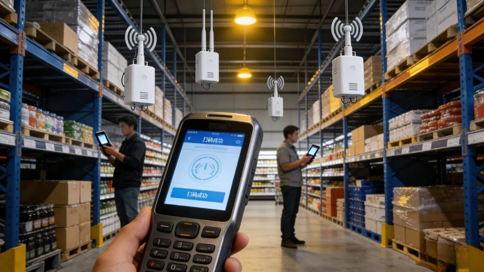

毕业设计（论文）展示网站
本设计旨在为某大型连锁超市构建一套高效、稳定、安全的区域网络系统。通过合理的拓扑设计、设备选型和安全策略，满足超市日常运营、POS收银、库存管理、视频监控等多业务场景的网络需求。
采用“核心层-汇聚层-接入层”三层架构，确保网络的稳定性和可扩展性。

| 设备类型 | 型号 | 数量 | 主要功能 |
|---|---|---|---|
| 核心路由器 | Cisco ISR 4321 | 2 | Internet接入、路由转发 |
| 核心交换机 | Huawei S5735-S48T4X | 2 | 三层交换、VLAN终结 |
| 汇聚交换机 | Huawei S5735-L24T4S | 4 | 接入层汇聚、链路聚合 |
| 接入交换机 | Huawei S5720S-28X-SI | 12 | 终端接入、PoE供电 |
| 防火墙 | Hillstone SG-6000-G30 | 2 | 安全策略、入侵防御 |
| VLAN ID | 用途 | 网段 | 网关 | 备注 |
|---|---|---|---|---|
| VLAN 10 | POS收银区 | 192.168.10.0/24 | 192.168.10.1 | 高优先级业务 |
| VLAN 20 | 办公区 | 192.168.20.0/24 | 192.168.20.1 | 员工办公、OA系统 |
| VLAN 30 | 仓储区 | 192.168.30.0/24 | 192.168.30.1 | 库存管理系统 |
| VLAN 40 | 监控区 | 192.168.40.0/24 | 192.168.40.1 | 视频监控流 |
| VLAN 50 | 服务器区 | 192.168.50.0/24 | 192.168.50.1 | 数据库、应用服务器 |